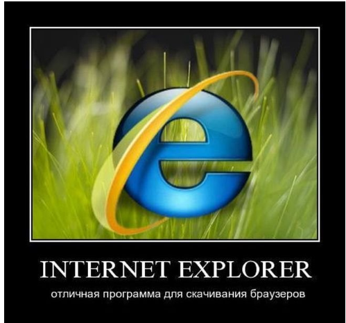

Для того, чтобы увидеть результат работы кода, необходимо открыть файл в браузере. Для этого откройте файл в редакторе кода, например, Visual Studio Code. После этого нажмите на кнопку "Run" (запуск) в редакторе кода. В браузере откроется страница с результатом работы кода. В этом уроке вы научитесь пользоваться основными инструментами редактора VS Code, в котором будет происходить большая часть нашей работы.

Чтобы лучше владеть редактором кода VS Code рекомендую пройти мой абсолютно бесплатный курс "Тренажер по вёрстке, плагин Emmet" он займет всего несколько часов, так как очень динамичный. Можете добавить этот курс в свой список желаний и отложить его до того момента, когда изучите основы HTML и CSS в этом курсе. Он бесплатен и доступен всегда, так что торопиться не обязательно, просто помните о нём.